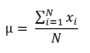
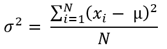
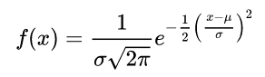

set.seed(34)
population_trees <- round(rnorm(1500, mean = 15, sd = 4), 2)Perfection is always impossible; always it’s an approximation
Introduction
Formally, statistical inference can be defined as the process by which conclusions are drawn about a population based on values calculated from a sample drawn from that population.
If your work is related to science in any of its branches I am sure you know that statistical inference plays an important role in the exploration, analysis and validation of our experimental results. A statement is often used as evidence that you have succeeded in testing some hypothesis derived from your research: these results show significant differences with a p-value < 0.05.
In this post I will explain some concepts related to statistical inference and how it can be illustrated using R code.
Populations, Samples, Parameters and Statistics
According to Cambridge Dictionary , an inference is an assumption that is made or an opinion that is formed from available information. In statistics, the purpose of an inference is to draw conclusions about the population from a sample.
The population is the complete set of objects of interest to us. For example, we may be interested in all the trees of a species located in a forest, all the people in a city, or even the elements of a continuous process such as the cookies produced in a factory. It is important to keep in mind that most of the time we do not have access to the entire population because it is too large and it would be impractical to analyze each element or because the population can be considered a continuum as in the cookie factory.
Statistical inference can help us when we do not have all the information of a population. The first step is to take some elements of this population, which we call a sample. For this we must ensure that the sampling process guarantees that each element of the population has an equal chance of being selected.
Once we obtain the sample we may be interested in some property of the population, so we proceed to measure this characteristic in each element of the sample. This property can be the height, the expression of some gene, the amount of sugar, the hardness, etc. Then, a number is calculated that summarizes the characteristic measured across all elements of the sample. These numbers are usually the mean, variance and standard deviation, which together are called statistics.
Finally, with some assumptions, the population parameters can be inferred from the statistics. The parameters are the mean, standard deviation and variance of the entire population.
See the following figure where I illustrate the whole process with cookies:

Depending on the measured characteristic or property different inference methods may be required. In this explanation I will only work with numbers on a continuous scale.
Calculation of Statistics
It is time to do some calculations with R code. First I will define a simulated population of 1500 values. Suppose we have measured all the heights of a given tree species:
To simulate the values I used the rnorm() function, which returns random values from a normal distribution with a given mean and standard deviation. The round() function rounds the values to the given number of significant figures, and finally the set.seed() function ensures that we always get the same results from this and other code chunks, so if you decide to reproduce them on your own computer the results should also be the same.
Next, let’s take a sample of 30 elements from our simulated population:
set.seed(12)
sample_trees <- sample(population_trees, size = 30)
sample_trees [1] 11.89 9.95 12.65 19.30 12.51 21.27 15.75 12.46 18.07 14.08 15.30 20.11
[13] 10.78 17.12 14.09 14.57 16.02 14.89 13.87 18.05 14.37 17.60 14.55 23.41
[25] 11.80 14.35 15.52 19.99 14.00 18.24Note that the sample() function takes the elements of the given data set randomly, so I also used the set.seed() function to ensure the reproducibility of this example.
Sample Mean or Sample Average
We can calculate the sample mean with the following equation:

The above is the sum (summation) of all the measurements in the sample divided by the sample size (n). i is the index of each item or measurement.
With R code in our previous sample:
ms_trees <- sum(sample_trees) / length(sample_trees)
ms_trees[1] 15.552We can directly use the mean() function with our data to calculate the mean:
mean(sample_trees)[1] 15.552Sample Variance and Dtandard Deviation
For the sample variance you use the next equation:

This is described as the sum of the differences between each sample measurement and the sample mean. Each difference is squared, so negative and positive differences do not cancel each other out. The sum is then divided by the sample size minus one.
With R code:
vs_trees <- sum((sample_trees - ms_trees)^2) / (length(sample_trees) - 1)
vs_trees[1] 10.32456If you are wondering why we have divided by n - 1, I can briefly tell you that this way offers the best estimation of the population variance. You can also check out the next page: Why divide by N - 1 when calculating the variance of a sample?.
To obtain the standard deviation, it is sufficient to calculate the square root of the variance, thus providing a measure of the dispersion of the sample in the original units of measurement:
ss_trees <- sqrt(vs_trees)
ss_trees[1] 3.213186As in the case of the mean, with R code we can obtain the variance and standard deviation directly with the var() and sd() functions, respectively:
#Sample varianza
var(sample_trees)[1] 10.32456# Standard deviation
sd(sample_trees)[1] 3.213186Calculation of Parameters
If you have all the data for a population, we can also directly calculate the mean, variance and standard deviation.
Mean or average of the population
To calculate population mean we use the next equation:

You can see that this equation is quite similar to the sample mean, but here N refers to all elements of the population. Let’s calculate the mean in our simulated data:
mp_trees <- sum(population_trees) / length(population_trees)
mp_trees[1] 14.89803Instead of the previous operation you can use the mean() function with the same purpose:
mean(population_trees)[1] 14.89803Variance and Standard Deviation of the Population
The equation for population variance:

Note that here we divide by the total population size N, not by n-1 as in the sampling variance. Let us calculate this parameter in our previous data:
sum_square <- sum((population_trees - mean(population_trees))^2)
pv_trees <- sum_square / length(population_trees)
pv_trees[1] 15.39988The base functions of R do not have one that calculates the population variance, but this can be solved by multiplying the value obtained with var()by (n-1)/n:
varp_trees <- var(population_trees)
varp_trees <- varp_trees * (length(population_trees) - 1) / length(population_trees)
varp_trees[1] 15.39988To calculate the standard deviation it would be sufficient to obtain the square root of the previous value:
sqrt(varp_trees)[1] 3.924268Note that the population mean and standard deviation are close to those specified in the code we used to simulate the data rnorm(1500, mean = 15, sd = 4).
Distributions
A probability distribution is a function (a table, an equation or a graph) that relates all possible values in a population to their frequencies, counts or probabilities of occurrence.
To illustrate the above let’s simulate a population of 1000 cookies, where we are interested in the diameter of each cookie. The frequency distribution of the diameter would look like this:
# Packages
library(dplyr)
library(ggplot2)
set.seed(5) # For reproducibility
# Diameter data from a normal distribution
diameter <- rnorm(1000, mean = 5, sd = 0.4) # mean = 5 cm
diameter <- tibble(D = diameter)
# Histogram
freq_hist <- diameter %>%
ggplot(aes(x = D)) +
geom_histogram(color = "black", fill = "white", binwidth = 0.2) +
xlab("Diameter (cm)") +
ylab("Count") +
theme_classic()
freq_hist
Although in many cases we will not have all the data from a population, the concept of probability distribution is still important in statistical inference. This is because we can assume that our data come from a theoretical distribution and then test whether the sample statistics belong to that distribution.
Sampling Mean Distribution
The concept of distribution can also be applied to statistics such as the mean. To illustrate the above for our population of cookies let’s repeatedly take samples of size 5 and make a histogram with the averages of these samples:
set.seed(151) # For reproducibility
# 1000 samples
n_samples <- 1000
# Empty vector where all means will be stored
mean_cookies <- vector("numeric", length = n_samples)
# Take a random sample of size 5, calculate the mean and save it in previous vector
# Repeat the process 1000 times
for (i in 1:n_samples) {
mean_cookies[i] <- mean(sample(diameter$D, size = 5))
}
# Make a data frame with all means from samples of size 5
mean_cookies <- data.frame(mean_n5 = mean_cookies)
# Histogram
freq_hist_mean <- mean_cookies %>%
ggplot(aes(x = mean_n5)) +
geom_histogram(color = "black", fill = "white", binwidth = 0.1) +
xlab("Diameter (cm)") +
ylab("Count") +
theme_classic()
freq_hist_mean
The previous code can be repeated with other sample sizes and this will be important in a later section (Central Limit Theorem).
The normal distribution
Since it is rare to know the actual distribution of data, we have to resort to theoretical distributions. There are a lot of such distributions and undoubtedly the normal distribution is the most important in statistical inference. This distribution applies to continuous data (length, weight, temperature, etc.) and is defined by the following equation:

A graph of the above equation looks like this (with mean equal to zero and standard deviation equal to one):

Student’s t distribution
When sample sizes are small and the true standard deviation of the population is not known, Student’s t-distribution can be used to make a good guess of the distribution of the data. The shape of this distribution depends on the sample size and for large sample sizes the t-distribution tends to be normal:

The black line corresponds to a sample size of 2, the red line to a sample size of 4, the blue one to a size of 10, and the green one to a size of 50.
Central Limit Theorem
The central limit theorem states that even if the original data do not follow a normal distribution, the sampling distribution of the mean of the data will tend to follow a normal distribution when the sample size is large enough.
To illustrate this theorem let’s simulate data from a non-normal distribution:
set.seed(51)
# Simulate data from a uniform distribution
non_normal_data <- data.frame(x = runif(10000, max = 100))
# Histogram
non_normal_hist <- ggplot(non_normal_data, aes(x)) +
geom_histogram(color = "black", fill = "white") +
ylab("Count") +
theme_classic()
non_normal_hist
Now let’s take 1000 samples of size 2, calculate their means, and made a histogram with all these means:
set.seed(15)
mean_n2 <- vector("numeric", length = 1000)
for (i in 1:1000) {
mean_n2[i] <- mean(sample(non_normal_data$x, size = 2))
}
hist_n2 <- ggplot(data = data.frame(x = mean_n2), aes(x)) +
geom_histogram(color = "black", fill = "white") +
ylab("Count") +
xlab("Mean value (n = 2)") +
theme_classic()
hist_n2
We can repeat the same process with samples of size 10:
set.seed(15)
mean_n10 <- vector("numeric", length = 1000)
for (i in 1:1000) {
mean_n10[i] <- mean(sample(non_normal_data$x, size = 10))
}
hist_n10 <- ggplot(data = data.frame(x = mean_n10), aes(x)) +
geom_histogram(color = "black", fill = "white") +
ylab("Count") +
xlab("Mean value (n = 10)") +
theme_classic()
hist_n10
Then with samples of size 30:
set.seed(13)
mean_n30 <- vector("numeric", length = 1000)
for (i in 1:1000) {
mean_n30[i] <- mean(sample(non_normal_data$x, size = 30))
}
hist_n30 <- ggplot(data = data.frame(x = mean_n30), aes(x)) +
geom_histogram(color = "black", fill = "white") +
ylab("Count") +
xlab("Mean value (n = 30)") +
theme_classic()
hist_n30
It can be observed that as the sample size increases the distribution of the mean tends to adopt a bell shape. That is, the distribution of the mean tends to normality as we increase the sample size. Note also how all distributions of the mean are centered around the mean of the original data:
library(ggpubr) # Arrange multiple ggplots on the same figure
hist_means <- ggarrange(non_normal_hist, hist_n2, hist_n10, hist_n30)
hist_means
What happens to the variance and standard deviation of the sampling distributions of the mean? These parameters decrease in each distribution as we increase the sample size. Let’s calculate the standard deviations:
dist_sds <- data.frame(
Distribution = c("Non normal", "n = 2", "n = 10", "n = 30"),
SD = c(sd(non_normal_data$x), sd(mean_n2), sd(mean_n10), sd(mean_n30))
)
dist_sds Distribution SD
1 Non normal 28.954840
2 n = 2 20.406067
3 n = 10 9.225895
4 n = 30 5.056629The reduction of standard deviation values tends to be equal to dividing the standard deviation of the original data by the square root of the sample size (this value is also known as the standard error):
# Standard deviation for samples of size 2
sd(non_normal_data$x) / sqrt(2)[1] 20.47416# Standard deviation for samples of size 10
sd(non_normal_data$x) / sqrt(10) [1] 9.156324# Standard deviation for samples of size 30
sd(non_normal_data$x) / sqrt(30) [1] 5.286406Thus, the central limit theorem allows us to use statistical methods based on a normal distribution with data from non-normal distributions.
Statistical Inference
It is time to put into practice the concepts we have covered so far. We are going to work with a sample of size 10 drawn from the non-normal distribution we simulated in the previous section. The objective is to infer whether the population mean is equal to 30 based on the sample mean we obtain.
First, we take the sample and calculate its mean:
set.seed(92)
sample_n10 <- sample(non_normal_data$x, size = 10)
mean_n10 <- mean(sample_n10)
mean_n10[1] 53.70605As a next step we standardize this value in order to compare it with the values of a theoretical distribution. This calculation is performed by subtracting the hypothetical population mean (30) from the sample mean we obtained. The result of the above subtraction is then divided by the standard error:
st_error <- sd(sample_n10) / sqrt(length(sample_n10))
stand_n10 <- (mean_n10 - 30) / st_error
stand_n10[1] 2.458524Suppose we do not have all the values of the simulated population, but we do have the values of a Student’s t-distribution with mean 30 and an error or standard deviation equal to that of our sample:
x_vals <- seq(0, 1, by = 0.001)
data_t <- data.frame(t_vals = qt(x_vals, df = 9))
ggplot(data_t, aes(t_vals)) +
geom_histogram(fill = "steelblue1", color = "black") +
xlab("t values") +
ylab("Count") +
theme_classic()Warning: Removed 2 rows containing non-finite values (`stat_bin()`).
In this example the qt() function generates standardized values by default, so no additional operations have to be performed.
Now let us ask the question: What proportion of values in the t distribution are greater than the standardized value of our sample? We can answer with the following code:
sum(abs(data_t$t_vals) >= stand_n10) / length(data_t$t_vals)[1] 0.03796204Only a small proportion of all values in the theoretical distribution are larger, in absolute terms, than the mean we obtained, so we could infer that the population mean we are interested in is other than 30.
All of the above can be done with the t.test() function and our sample data:
t.test(sample_n10, alternative = "two.sided", mu = 30)
One Sample t-test
data: sample_n10
t = 2.4585, df = 9, p-value = 0.03625
alternative hypothesis: true mean is not equal to 30
95 percent confidence interval:
31.89345 75.51865
sample estimates:
mean of x
53.70605 The ratio we calculated previously is better known as p-value. Note how the value obtained by the t.test() function is quite similar.
It is also important to note that the argument alternative = "two.sided" in the t.test() function refers to a two-tailed hypothesis test. That is, sufficiently large or sufficiently small sample means will lead us to conclude that the population mean is different from 30. For this reason I used the abs() function in the proportion calculation to include the negative and positive values of the t distribution whose absolute values were greater than the standardized sample value.
How small must the proportion of values in the theoretical distribution be to infer that our statistic is not part of that distribution? A general and widely accepted rule of thumb is usually set at a proportion of 0.05. In other words, if our p-value is less than 0.05 we can conclude that the population mean is significantly different from the hypothesized value.
Key points
- Statistical inference allows us to make inferences about the parameters of a population based on statistics calculated from a sample.
- For data on a continuous measurement scale, statistics such as mean, variance and standard deviation are usually calculated. With R code it is possible to calculate these statistics with
mean(),var()andsd()functions. - A probability distribution relates the possible values of a population to their frequencies, counts or probabilities of occurrence.
- The central limit theorem states that the sampling distribution of the mean tends to be normal when the sample size is large enough, even if the original data do not follow a normal distribution.
- The
t.test()function can be used to make inferences about the population mean based on sample data. - As a rule of thumb, if the obtained p-value is less than 0.05 we can state that the population mean is different from some hypothetical value.
The code on this post is licensed under the Creative Commons Attribution 4.0 International License